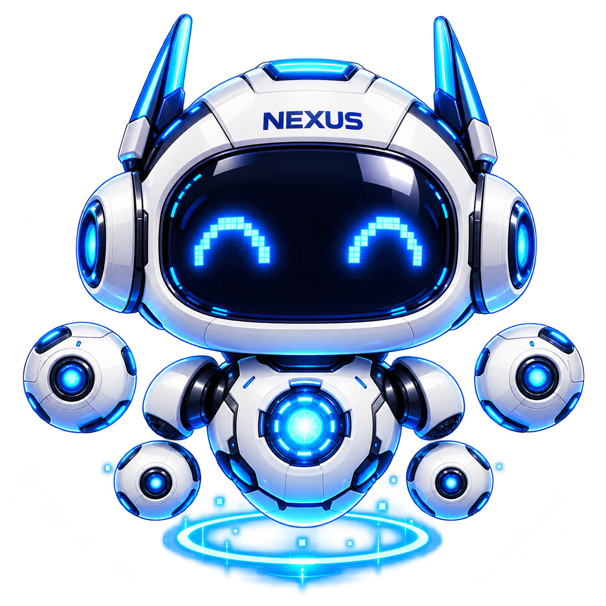

Nexus / Motion prototype 01
Ele não precisa ficar parado.
Primeiro passo de um personagem articulado: idle expressivo e quatro módulos percorrendo uma órbita contínua, cruzando atrás e na frente do corpo. A composição utiliza as camadas PNG originais do laboratório existente — sem redesenho em SVG, sem inventar geometria 3D.
NEX / ATLAS-FREE 2D

Carregando camadas do laboratório…
CARREGANDO
2D rig · Canvas · sem Three.js